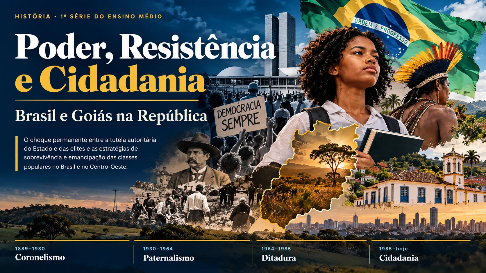
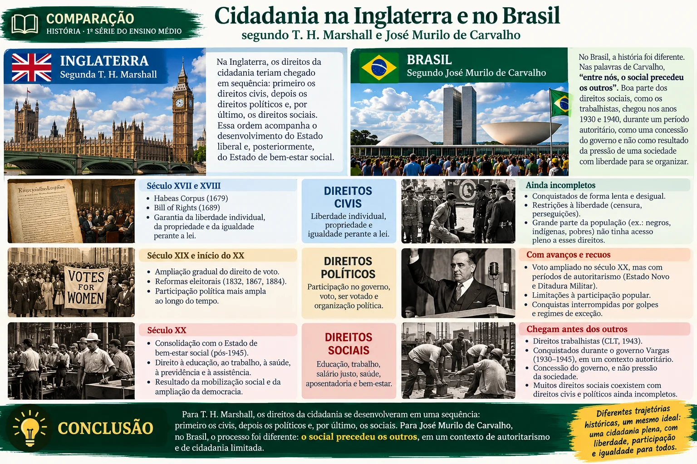
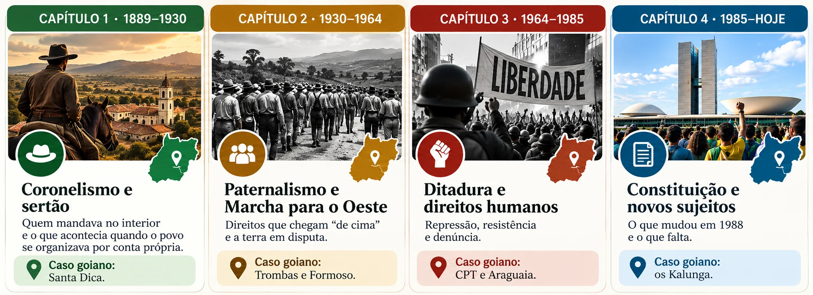

Antes de começar
Habilidades e objetivos
O que você vai desenvolver e aprender ao longo deste livro.
Descritores da trilha
Poder e tutela
Identificar e problematizar práticas de paternalismo, autoritarismo e populismo nas diferentes fases da República brasileira e suas configurações específicas na dinâmica sociopolítica e fundiária de Goiás.
Resistência e direitos
Analisar as formas de organização e resistência de movimentos sociais, estudantis, sindicais, camponeses, messiânicos e indígenas contra práticas autoritárias e na defesa da liberdade, da terra e dos Direitos Humanos (esferas nacional e regional).
Habilidades em foco
| Habilidade | O que você vai fazer |
|---|---|
| GO-EMCHS602C (DC-GO) e (EM13CHS602) Identificar e caracterizar a presença do paternalismo, do autoritarismo e do populismo na política, na sociedade e nas culturas brasileira e latino-americana, em períodos ditatoriais e democráticos, relacionando-os com as formas de organização e de articulação das sociedades em defesa da autonomia, da liberdade, do diálogo e da promoção da democracia, da cidadania e dos direitos humanos na sociedade atual. | Reconhecer como paternalismo, autoritarismo e populismo apareceram na República e como as pessoas se organizaram para defender direitos. |
| (EM13CHS601) Identificar e analisar as demandas e os protagonismos políticos, sociais e culturais dos povos indígenas e das populações afrodescendentes (incluindo as quilombolas) no Brasil contemporâneo considerando a história das Américas e o contexto de exclusão e inclusão precária desses grupos na ordem social e econômica atual, promovendo ações para a redução das desigualdades étnico-raciais no país. | Analisar a luta de indígenas e quilombolas por terra e reconhecimento, com o exemplo do povo Kalunga, em Goiás. |
| (EM13CHS101) Identificar, analisar e comparar diferentes fontes e narrativas expressas em diversas linguagens, com vistas à compreensão de ideias filosóficas e de processos e eventos históricos, geográficos, políticos, econômicos, sociais, ambientais e culturais. | Comparar a versão do governo e da imprensa com a memória popular e com a análise de historiadores. |
| (EM13CHS503) Identificar diversas formas de violência (física, simbólica, psicológica etc.), suas principais vítimas, suas causas sociais, psicológicas e afetivas, seus significados e usos políticos, sociais e culturais, discutindo e avaliando mecanismos para combatê-las, com base em argumentos éticos. | Compreender a repressão como política de Estado e o papel dos mecanismos de denúncia e de proteção de direitos. |
| (EM13CHS605) Analisar os princípios da declaração dos Direitos Humanos, recorrendo às noções de justiça, igualdade e fraternidade, identificar os progressos e entraves à concretização desses direitos nas diversas sociedades contemporâneas e promover ações concretas diante da desigualdade e das violações desses direitos em diferentes espaços de vivência, respeitando a identidade de cada grupo e de cada indivíduo. | Avaliar o que a Constituição de 1988 garantiu e o que ainda falta para que os direitos sejam vividos na prática. |
- o que são direitos civis, políticos e sociais e por que a ordem em que eles chegaram ao Brasil importa;
- como funcionavam o mandonismo, o coronelismo e o clientelismo na Primeira República;
- por que Canudos, Contestado e Santa Dica foram tratados como ameaça à ordem;
- o que é paternalismo e populismo e como o trabalhismo deu direitos e, ao mesmo tempo, controlou os sindicatos;
- como a ditadura reprimiu trabalhadores, camponeses e estudantes e como eles resistiram;
- o que a Constituição de 1988 mudou e o que ainda falta, no Brasil e em Goiás.
Para começar
Por que estudar cidadania?
Direitos não nascem prontos: são escritos, disputados, ampliados — e, muitas vezes, ainda precisam ser conquistados na prática.
↗Direitos civis, políticos e sociais
Os historiadores costumam dividir a cidadania em três tipos de direito. O historiador José Murilo de Carvalho (1939–2023), que escreveu o livro Cidadania no Brasil: o longo caminho, explica cada um deles. Leia primeiro como ele define os direitos civis.
Os direitos políticos e os direitos sociais completam o quadro. Observe como o autor mostra que uma coisa não garante a outra.
A tese: no Brasil, a ordem foi outra

Carvalho parte de uma ideia do sociólogo inglês T. H. Marshall: na Inglaterra, os direitos teriam chegado em sequência — primeiro os civis, depois os políticos, por último os sociais. No Brasil, sustenta Carvalho, a história foi diferente: nas palavras do livro, “entre nós o social precedeu os outros”. Boa parte dos direitos sociais, como os trabalhistas, chegou nos anos 1930 e 1940, durante um período autoritário, como uma concessão do governo e não como resultado da pressão de uma sociedade com liberdade para se organizar.
segundo Marshall1º civis2º políticos3º sociais
segundo Carvalhosocial antes de tudopolíticos com avanços e recuoscivis ainda incompletos
Além de José Murilo de Carvalho, outros estudiosos ajudam a compreender a formação desigual da cidadania no Brasil. Wanderley Guilherme dos Santos analisa a cidadania regulada, vinculando historicamente o acesso a direitos sociais às profissões reconhecidas e regulamentadas pelo Estado. James Holston, por sua vez, discute a cidadania diferenciada e insurgente, mostrando tanto a distribuição desigual de direitos quanto as lutas de grupos populares pela ampliação da cidadania.
1 · Conheça os autoresExplore os três autores e suas obrasJosé Murilo de Carvalho · Wanderley Guilherme dos Santos · James Holston — veja primeiro cada autor separadamente, em carrossel com zoom regulável. Abrir carrossel ↗ ◫ 2 · Compare os três olhares sobre a cidadania no BrasilDepois de conhecer os autores, compare José Murilo de Carvalho, Wanderley Guilherme dos Santos e James Holston em duas imagens didáticas.Abrir carrossel comparativo com zoom ↗O que vem pela frente

República Velha · 1889–1930
Mandonismo, coronelismo e sertão
Quem mandava no interior e o que acontecia quando o povo se organizava por conta própria.
Entre 1889 e 1930, a República brasileira foi governada por poucos e para poucos. Quem vivia no interior dependia do dono da terra para trabalhar, para votar e até para ser atendido por um médico — e, quando se organizava por conta própria, costumava ser tratado como inimigo da ordem.
- Como o coronelismo sustentava a política republicana?
- Por que movimentos populares eram tratados como ameaça à ordem?
- Que cidadania havia na Primeira República?
A República dos poucos
A Proclamação da República, em 1889, prometia ampliar a participação política. Na prática, o direito de votar ficou restrito a uma pequena parcela da população: mulheres e analfabetos estavam excluídos e o voto era aberto, ou seja, não era secreto. Isso criava um regime em que os grupos mais ricos e poderosos controlavam o governo.
O poder dos coronéis
No campo, onde vivia a maioria da população, o poder real estava nas mãos dos coronéis. Eles controlavam a terra, o emprego, a polícia local e, por consequência, os votos. A leitura a seguir descreve esse sistema.
Mandonismo: poder pessoal de um chefe local sobre as pessoas que dependem dele.
Coronelismo: sistema de trocas entre os coronéis, os governos estaduais e o governo federal, típico da Primeira República.
Clientelismo: troca de favores por apoio político (empregos, remédios, vagas na escola em troca de votos).
Carvalho discute a diferença entre esses três termos no artigo “Mandonismo, coronelismo, clientelismo: uma discussão conceitual” (Dados, v. 40, n. 2, 1997).
“Passado o entusiasmo inicial provocado pela Proclamação da República, nem mesmo a elite conseguia, no campo das [ideias], chegar a certo acordo quanto à definição de qual deveria ser o relacionamento do cidadão com o Estado. No campo da ação política, fracassaram sistematicamente as tentativas de mobilizar e organizar a população dentro dos padrões conhecidos nos sistemas liberais.”
Quando o povo reage: a Revolta da Vacina
A população das cidades também reagia quando se sentia desrespeitada. Em 1904, no Rio de Janeiro, a vacinação obrigatória contra a varíola foi imposta sem diálogo e provocou uma grande revolta. Em 1910, marinheiros, majoritariamente negros e pobres, se revoltaram contra os castigos físicos na Marinha, na chamada Revolta da Chibata.
Carvalho analisou essa revolta no livro Os bestializados: o Rio de Janeiro e a República que não foi (1987). Leia a seguir dois trechos em que ele descreve a reação da população.
“A Revolta da Vacina (1904) mostrou claramente o aspecto defensivo, desorganizado, fragmentado da ação popular. Não se negava o Estado, não se reivindicava participação nas decisões políticas; defendiam-se valores e direitos considerados acima da intervenção do Estado.”
“Chamando o repórter de “cidadão”, em 1904, o preto acapoeirado justificava a revolta: era para “não andarem dizendo que o povo é carneiro. De vez em quando é bom a negrada mostrar que sabe morrer como homem!”. Para ele, a vacinação em si não era importante — embora não admitisse de modo algum deixar os homens da higiene meter o tal ferro em suas virilhas. O mais importante era “mostrar ao governo que ele não põe o pé no pescoço do povo”.”
Terra, fé e resistência: Canudos e Contestado
No sertão, a resistência tomou outra forma. Em Canudos (Bahia) e no Contestado (divisa entre Paraná e Santa Catarina), famílias pobres sem acesso à terra se reuniram em comunidades próprias, lideradas por figuras religiosas. O Estado respondeu com tropas. Leia a seguir como as duas guerras são descritas.
Em Goiás: oligarquias em disputa e o arraial de Santa Dica
Caiado e Bulhões
Em Goiás, a política era dominada por grupos familiares que disputavam o poder. Antônio Ramos Caiado, o Totó Caiado, foi deputado federal de 1909 a 1920 e senador de 1921 a 1930, e esteve entre os fundadores do Partido Democrata, em 1909, com aliados como Leopoldo de Bulhões e Eugênio Jardim (as alianças mudaram com o tempo). Seu irmão Brasil Ramos Caiado presidiu o estado de 1925 a 1929.
Em 1909, um movimento armado na Cidade de Goiás, então capital do estado, sob o comando de Eugênio Jardim, derrubou o presidente do estado, Miguel da Rocha Lima. O episódio mostra que a disputa entre grupos oligárquicos podia chegar às armas, sem que isso significasse maior participação popular.
O arraial de Santa Dica (Lagoinha, Pirenópolis)
Benedita Cipriano Gomes (1905–1970), conhecida como Santa Dica, tornou-se referência religiosa e de cura para uma comunidade que se formou em torno dela, em Lagoinha, entre 1923 e 1925. Os relatos falam em trabalho coletivo, uso comum da terra, restrição ao uso do dinheiro e crítica aos impostos. Parte do que se sabe sobre o arraial vem da tradição oral; por isso, esses relatos são interpretações.
Em 1925, o governo estadual enviou tropa ao arraial. Os relatos divergem sobre o número de mortos e sobre quanto tempo ela ficou presa, mas concordam que acabou solta. O jornalista Mário Mendes teve papel na sua defesa, e os dois se casaram em 1928. Como em Belo Monte, em Canudos, o poder público tratou uma comunidade pobre, organizada em torno de uma liderança religiosa, como caso de polícia. A diferença está na escala e nas circunstâncias.
A Coluna Prestes em Goiás
O tenentismo foi um movimento de jovens militares contra as oligarquias e as fraudes eleitorais. A Coluna Prestes, sua expressão mais radical, atravessou o norte e o nordeste de Goiás em 1925 e 1926, passando por Natividade e São José do Duro em outubro de 1925. Contra ela atuaram sobretudo os chamados batalhões patrióticos, organizados por chefes regionais, como o do coronel Abílio Wolney, no nordeste do estado.
- 1889Proclamação da RepúblicaVoto restrito: mulheres e analfabetos excluídos.
- 1893–97Arraial de Belo Monte e Guerra de CanudosQuatro expedições militares contra a comunidade.
- 1904Revolta da VacinaRevolta urbana contra a imposição autoritária da vacinação.
- 1909Movimento armado na Cidade de GoiásDisputa entre grupos oligárquicos goianos.
- 1912–16Guerra do ContestadoConflito entre camponeses e forças estaduais e federais.
- 1923–25Arraial de Santa DicaEm 1925, tropa estadual é enviada a Lagoinha.
- 1925–26Coluna Prestes em GoiásTenentismo e desgaste do modelo oligárquico.
Era Vargas e República Populista · 1930–1964
Paternalismo, populismo e Marcha para o Oeste
Direitos que chegam “de cima”, trabalhadores que também lutam por eles e a terra do interior em disputa.
A partir de 1930, o Estado brasileiro passou a reconhecer direitos de quem trabalhava. Isso foi uma conquista real, mas veio acompanhado de controle, propaganda e de uma imagem: a de que os direitos eram um presente do governante. Neste capítulo você vai aprender a separar o que foi benefício, o que foi luta e o que foi controle.
- Os direitos trabalhistas foram uma dádiva do governo ou uma conquista dos trabalhadores?
- O que é paternalismo? E o que se entende por populismo?
- O que acontecia com os trabalhadores do campo e com os povos indígenas nesse período?
Direitos de cima para baixo: o trabalhismo
Antes de 1930, os operários já se organizavam, faziam greves e eram reprimidos. Depois da Revolução de 1930, Vargas percebeu que os trabalhadores das cidades se tornavam uma força política importante e procurou atraí-los. Os textos a seguir mostram os dois lados dessa política: ela reconheceu direitos e, ao mesmo tempo, colocou os sindicatos sob a vigilância do Estado.
Paternalismo: relação em que quem governa trata os governados como filhos a serem protegidos, e não como cidadãos com direitos que podem exigir. O benefício aparece como favor, e a gratidão passa a ser esperada.
Trabalhismo: conjunto de ideias e de leis que ligou o reconhecimento de direitos do trabalho ao Estado e à figura do presidente. Neste período, os sindicatos precisavam do aval do Ministério do Trabalho.
Populismo: nome dado, por alguns autores, ao estilo de governo que fala diretamente às massas urbanas, em especial entre 1930 e 1964. O termo é debatido pelos historiadores, como mostram os dois autores a seguir.
Manipulação ou troca? O debate sobre o populismo
Por muito tempo se explicou esse período dizendo que Vargas e seus sucessores simplesmente enganaram os trabalhadores. Pesquisadores posteriores discordaram: os trabalhadores teriam escolhido, negociado e pressionado. As duas citações a seguir mostram o debate com as palavras dos próprios autores.
[…] O populismo foi, sem dúvida, manipulação de massas, mas a manipulação nunca foi absoluta. Se o fosse, estaríamos obrigados a aceitar a visão liberal elitista que, em última instância, vê no populismo uma espécie de aberração da história, alimentada pela emocionalidade das massas e pela falta de princípio dos líderes. [...] O populismo foi um modo determinado e concreto de manipulação das classes populares mas foi também um modo de expressão de suas insatisfações. Foi, ao mesmo tempo, uma forma de estruturação do poder para os grupos dominantes e a principal forma de expressão política da emergência popular no processo de desenvolvimento industrial e urbano.
[O texto] A invenção do trabalhismo [...] [teve o objetivo de] investigar a história da constituição da classe trabalhadora no Brasil, atribuindo a ela, durante todos os “tempos”, um papel de sujeito que realiza escolhas segundo o horizonte de um campo de possibilidades. A abordagem se recusava a atribuir aos trabalhadores uma posição política passiva, não importando se mais ou menos completa. Aqui residia a grande dificuldade, teórica e histórica, de utilização do conceito de populismo que, como foi visto, remetia à ideia de manipulação política, ainda que se reconhecessem todas as suas ambiguidades. Por razões que se prendiam a seu próprio uso compartilhado, tudo o que estivesse qualificado como populista enfatizava a dimensão de controle/ação do Estado sobre as massas, pois inclusive uma das questões mais complexas desta formulação era a própria negação do estatuto de classe (por falta de organização e consciência) aos trabalhadores inclusos nestas massas que, sem dúvida, os extrapolavam.
Na tese de José Murilo de Carvalho, o Brasil seguiu um caminho diferente do modelo clássico: os direitos sociais chegaram primeiro, nos anos 1930, em um período em que os direitos políticos eram limitados. Carvalho chama a atenção para a consequência disso: os direitos passaram a ser vistos como favor do Estado, e não como resultado da ação dos cidadãos. Ele chama essa postura de “estadania”. Em Cidadania no Brasil: o longo caminho, o autor desenvolve o argumento com mais detalhes e vale a leitura na íntegra.
E o campo? A cidadania que não chegou
A legislação trabalhista da época foi pensada para as cidades. Quem trabalhava na terra ficou, em geral, de fora, como o texto sobre a CLT já indicou: os trabalhadores rurais permaneceram, em sua maioria, sem os direitos básicos. Isso é decisivo para o que vem a seguir, porque o interior era justamente a região para onde o governo queria levar gente, estradas e cidades.
A Marcha para o Oeste e os povos indígenas
A Marcha para o Oeste foi a principal iniciativa de Vargas voltada ao interior do Brasil. O governo queria estimular a ocupação do território, o desenvolvimento econômico e a defesa das fronteiras. A leitura abaixo mostra que ela envolveu também os povos indígenas, e que esses povos reagiram de formas diferentes.
Goiânia, a CANG e o Estado Novo
Goiás foi um dos palcos centrais da Marcha para o Oeste. A construção de Goiânia, planejada como nova capital durante o governo do interventor Pedro Ludovico Teixeira, simbolizou a ideia de um interior “moderno”. A Colônia Agrícola Nacional de Goiás (CANG), criada em 1941 na região onde hoje fica Ceres, foi pensada como um projeto de colonização dirigida: o governo federal distribuía lotes a famílias de lavradores. Esses projetos atraíram migrantes de vários estados e abriram a região norte-central de Goiás à ocupação.
O mesmo texto sobre o Estado Novo vale aqui: a propaganda mostrava a conquista do interior como obra do governo. Para os povos que já viviam ali, como os Karajá e os Xerente, a chegada de colonos e de estradas significou mais pressão sobre o território, e algumas aproximações com o governo foram uma estratégia de proteção, como a leitura anterior explica.
Trombas e Formoso: posseiros que se organizam
Nas décadas de 1940 e 1950, a região de Trombas e Formoso, no norte de Goiás, recebeu muitas famílias de posseiros, isto é, lavradores que ocupavam terras sem título formal. Quando grileiros (pessoas que forjavam documentos de propriedade) passaram a reivindicar as mesmas terras, os posseiros se organizaram. Formaram uma associação de lavradores, criaram uma estrutura própria de decisão coletiva e, em alguns momentos, resistiram com armas a tentativas de expulsão. Entre as lideranças esteve José Porfírio de Souza, que depois foi eleito deputado estadual, em 1962.
O caso é importante porque mostra camponeses que se organizam por conta própria para defender sua terra, num momento em que a lei trabalhista não alcançava o campo. Você vai ver mais adiante o que aconteceu com essa liderança durante a ditadura.
| CANG (colonização dirigida) | Trombas e Formoso (ocupação pelos posseiros) | |
|---|---|---|
| Quem comandou | O governo federal, por meio de um projeto oficial. | Os próprios lavradores, organizados em associação. |
| Como a terra foi obtida | Distribuição de lotes pelo Estado. | Ocupação, seguida de disputa com grileiros. |
| Imagem pública | Obra do governo na Marcha para o Oeste. | Luta camponesa por conta própria. |
As Ligas Camponesas e as reformas de base
Enquanto no Centro-Oeste os posseiros resistiam, no Nordeste surgiam as Ligas Camponesas. Elas defendiam direitos para os trabalhadores rurais e tornaram a reforma agrária um tema nacional. No governo de João Goulart (1961–1964), a reforma agrária fez parte do pacote das reformas de base.
- 1930Revolução de 1930Vargas chega ao poder.
- 1931Lei de SindicalizaçãoUm sindicato por categoria, aprovado pelo Ministério do Trabalho.
- 1937Estado NovoRegime autoritário, com censura e propaganda.
- 1941CANGColônia Agrícola Nacional de Goiás, na região de Ceres.
- 1943CLTDireitos trabalhistas reunidos em 1º de maio.
- 1950sTrombas e FormosoPosseiros se organizam contra grileiros no norte de Goiás.
- 1955Ligas CamponesasDefendem posseiros, sindicalização e direitos no campo.
- 1961–64Governo Goulart e reformas de baseA reforma agrária entra na pauta nacional.
Ditadura Civil-Militar · 1964–1985
Repressão, resistência e direitos humanos
O que acontece com a cidadania quando o Estado suspende garantias, e como a sociedade resiste e denuncia.
Em 1964, um golpe depôs o presidente João Goulart e instalou um regime militar que durou até 1985. Nesses vinte e um anos, os direitos civis e políticos foram reduzidos e opositores foram perseguidos. Mesmo assim, houve resistência: na cidade, no campo, na Igreja e entre estudantes. Neste capítulo você vai ver o que a lei autorizava, quem resistiu e como o interior de Goiás aparece nessa história.
- Que instrumentos legais o regime usou para concentrar poder?
- Como a repressão atingiu o campo e as comunidades rurais?
- Que papel tiveram os movimentos de denúncia, como a Igreja e a CPT?
Os atos institucionais e a suspensão de direitos
Os governos militares governaram por meio de atos institucionais, normas que valiam acima da própria Constituição. O primeiro deles, o AI-1, foi assinado em abril de 1964. O mais duro foi o AI-5, de 1968. A leitura a seguir resume os primeiros atos; logo depois você lê o AI-5 nas palavras da própria lei.
Art. 10 – Fica suspensa a garantia de habeas corpus, nos casos de crimes políticos, contra a segurança nacional, a ordem econômica e social e a economia popular. Art. 11 – Excluem-se de qualquer apreciação judicial todos os atos praticados de acordo com este Ato Institucional e seus Atos Complementares, bem como os respectivos efeitos.
Releia os dois artigos. O artigo 10 suspendia o habeas corpus, que protege a pessoa presa de ficar sem explicação. O artigo 11 impedia a Justiça de examinar os atos do governo ligados ao AI-5. Veja como esses dois dispositivos retiram do cidadão a defesa mais básica: saber por que foi preso e poder contestar isso diante de um juiz.
O campo na ditadura: um paradoxo
A ditadura reprimiu o movimento camponês: as Ligas Camponesas foram divididas, criminalizadas e fortemente reprimidas, como a leitura abaixo registra. Ao mesmo tempo, a ditadura criou, no início dos anos 1970, o FUNRURAL, programa que levou algum benefício previdenciário ao trabalhador rural. Isso se encaixa no que José Murilo de Carvalho descreve para o Brasil: direitos sociais concedidos em um período em que os direitos políticos estavam suspensos. Mas é preciso cuidado: o benefício existiu, mas os trabalhadores não podiam se organizar livremente para reivindicá-lo.
A guerrilha do Araguaia
Outra face da repressão no interior foi a Guerrilha do Araguaia. Ela envolveu militantes do PCdoB, na região do Rio Araguaia, na divisa entre os atuais Pará, Tocantins (até 1988, parte de Goiás) e Maranhão. A resposta militar foi violenta e atingiu também moradores da região.
Mauro Borges, o governo estadual e o golpe
Goiás também foi atingido pela instalação do regime. O governador Mauro Borges, que governava o estado desde 1961, foi afastado em 1964, após uma intervenção federal. O episódio mostra que a disputa do poder não ficou restrita às capitais do país: os estados também foram reorganizados pelos militares.
José Porfírio, Trombas e a repressão
A liderança camponesa de José Porfírio de Souza, que você conheceu no capítulo anterior, foi atingida pela repressão após 1964. Ele foi preso e acabou desaparecido durante o regime. A data exata é incerta, e o caso permanece como um dos exemplos de desaparecimento político ligados ao campo goiano. A Comissão Especial sobre Mortos e Desaparecidos Políticos registra o caso.
O Araguaia e Goiás
O território da guerrilha, no norte do que era então o estado de Goiás, hoje pertence ao Tocantins. Por isso o episódio aparece na história regional goiana, mesmo que a fronteira política tenha mudado com a Constituição de 1988, que criou o novo estado.
A Comissão Pastoral da Terra (CPT)
A CPT foi criada em 1975, em Goiânia, ligada à Igreja Católica, para acompanhar e denunciar a violência contra trabalhadores rurais e povos do campo. Num período em que a imprensa e os sindicatos estavam sob vigilância, a Igreja foi um dos poucos espaços de denúncia. A CPT segue ativa, e você vai ver no capítulo seguinte dados atuais produzidos por ela.
Ato institucional: norma baixada pelo governo militar com força superior à da Constituição, usada para suspender direitos e punir opositores.
Habeas corpus: garantia que permite a quem está preso pedir a um juiz que examine se a prisão é legal.
Desaparecimento político: prisão ou sequestro de opositores, seguidos da negação do paradeiro, sem processo público.
Direitos humanos: direitos de todas as pessoas, pelo simples fato de serem pessoas, e que o Estado deve proteger, e não violar.
- 1964Golpe civil-militar e AI-1Poder centralizado no presidente; cassações.
- 1964Intervenção em GoiásO governador Mauro Borges é afastado.
- 1968AI-5Suspensão do habeas corpus e fechamento do Congresso.
- Anos 1970Guerrilha do AraguaiaRepressão militar no norte de Goiás (hoje Tocantins).
- 1975Criação da CPTEm Goiânia, para denunciar a violência no campo.
- 1985Fim do regime militarInício da Nova República.
Nova República · 1985 até hoje
A Constituição de 1988 e os novos sujeitos de direitos
O que mudou com a Constituição Cidadã, quem passou a ser reconhecido e o que ainda falta.
Em 5 de outubro de 1988, o Brasil promulgou a Constituição que está em vigor até hoje. Ela foi chamada de Constituição Cidadã porque ampliou direitos e foi escrita com participação popular. Mas direitos escritos na lei precisam ser garantidos na prática, e é aí que entram os movimentos sociais, a terra e a situação de povos como os indígenas e os quilombolas.
- Por que a Constituição de 1988 é chamada de “Cidadã”?
- Que direitos ela reconheceu a indígenas e quilombolas?
- Por que, ainda hoje, há conflitos por terra e violência no campo?
Uma Constituição escrita com participação
Para Carvalho, a cidadania plena combina direitos civis, políticos e sociais, e cada país chega a ela por um caminho próprio. Depois do longo período de direitos concedidos “de cima”, a Constituição de 1988 aparece como um marco em que os direitos políticos e civis foram reafirmados e a participação da sociedade ganhou força. Como mostra o próprio autor, a cidadania é um processo histórico que continua em construção.
Povos indígenas e comunidades quilombolas
Dois artigos da Constituição tratam especificamente de povos que, por muito tempo, foram tratados como se não fossem sujeitos de direitos: o artigo 231, sobre os indígenas, e o artigo 68 do Ato das Disposições Constitucionais Transitórias, sobre os quilombolas.
Art. 231. São reconhecidos aos índios sua organização social, costumes, línguas, crenças e tradições, e os direitos originários sobre as terras que tradicionalmente ocupam, competindo à União demarcá-las, proteger e fazer respeitar todos os seus bens. § 1o São terras tradicionalmente ocupadas pelos índios as por eles habitadas em caráter permanente, as utilizadas para suas atividades produtivas, as imprescindíveis à preservação dos recursos ambientais necessários a seu bem-estar e as necessárias à sua reprodução física e cultural, segundo seus usos, costumes e tradições.
Art. 68. Aos remanescentes das comunidades dos quilombos que estejam ocupando suas terras é reconhecida a propriedade definitiva, devendo o Estado emitir-lhes os títulos respectivos.
Os Kalunga
Os Kalunga vivem na região da Chapada dos Veadeiros, no nordeste de Goiás, em territórios que incluem o município de Cavalcante. Formam uma comunidade quilombola, isto é, descendente de pessoas escravizadas que fugiram ou se estabeleceram em áreas distantes, e são considerados um dos maiores quilombos do país. A leitura abaixo descreve a comunidade e o modo como ela se relaciona com o ambiente. A seguir, uma antropóloga explica por que comunidades tradicionais passaram a afirmar publicamente sua identidade.
A terra: concentração, reforma agrária e conflitos
A Constituição prevê a reforma agrária, mas o acesso à terra continua desigual. Os dados abaixo, de pesquisas oficiais e da CPT, mostram a dimensão do problema.
Trabalho análogo à escravidão e a CPT
A Comissão Pastoral da Terra, que nasceu em Goiânia em 1975, continua produzindo relatórios anuais. A leitura a seguir apresenta dados do relatório de 2023 e coloca Goiás no topo da lista de resgates. Ele é um exemplo de como uma entidade que surgiu na ditadura continua atuando na democracia.
- 1985Fim do regime militarRetorno de um presidente civil.
- 1987Assembleia ConstituinteInstalada em fevereiro.
- 1988Constituição CidadãPromulgada em 5 de outubro.
- 2017Censo AgropecuárioRevela a concentração de terras.
- 2023Relatórios da CPTMaior número de conflitos no campo desde 1985; Goiás lidera os resgates de trabalhadores escravizados.
Para fechar
Síntese: poder, resistência e cidadania
Os quatro períodos lado a lado.
Ao longo da República, o poder se apresentou de formas diferentes: o coronel, o presidente que “dá” direitos, o regime que suspende garantias e a Constituição que as reconhece. A resistência também mudou de forma: do arraial ao sindicato, da associação de posseiros à denúncia pela Igreja e à luta pelo reconhecimento de povos tradicionais.
| Período | Forma de poder | Resistência | Caso em Goiás |
|---|---|---|---|
| 1889–1930 | Coronelismo e mandonismo | Comunidades messiânicas, revoltas, tenentismo | Santa Dica; Coluna Prestes |
| 1930–1964 | Paternalismo e populismo; Estado Novo | Sindicatos, Ligas Camponesas, posseiros | Trombas e Formoso; CANG |
| 1964–1985 | Ditadura civil-militar e atos institucionais | Denúncia, guerrilha, Igreja | CPT; Araguaia; Mauro Borges |
| 1985–hoje | Constituição Cidadã e conflitos por terra | Movimentos sociais, reconhecimento de povos tradicionais | Kalunga; relatório da CPT |
Para consultar
Glossário
Os conceitos centrais da trilha em linguagem direta.
- AI-5
- Ato Institucional n. 5, de 1968, que ampliou os poderes do regime militar e suspendeu garantias como o habeas corpus em casos políticos.
- Ato institucional
- Norma baixada pelos governos militares com força superior à da Constituição.
- Autoritarismo
- Forma de poder que concentra decisões em poucas mãos e limita a participação, a crítica e as liberdades.
- CANG
- Colônia Agrícola Nacional de Goiás, projeto federal de colonização dirigida criado em 1941, na região de Ceres.
- Cidadania
- Condição de quem exerce direitos civis, políticos e sociais e participa da vida pública.
- CLT
- Consolidação das Leis do Trabalho, de 1943, que reuniu direitos trabalhistas em uma só legislação.
- Clientelismo
- Troca de favores entre quem tem poder e quem precisa de proteção, emprego ou benefício, em geral em troca de apoio político.
- Constituição Cidadã
- Nome dado à Constituição de 1988, por ampliar direitos e ter contado com participação popular.
- Coronelismo
- Sistema político da Primeira República em que grandes proprietários, os coronéis, controlavam votos e autoridades locais em troca de favores.
- CPT
- Comissão Pastoral da Terra, criada em 1975 em Goiânia, que acompanha e denuncia conflitos no campo.
- Direitos civis
- Liberdades individuais e igualdade perante a lei.
- Direitos políticos
- Direitos de votar, ser votado e participar das decisões do país.
- Direitos sociais
- Direitos ligados às condições de vida, como trabalho, saúde e educação.
- Estadania
- Termo usado por José Murilo de Carvalho para a cidadania vista como favor do Estado, e não como resultado da ação dos cidadãos.
- Grileiro
- Pessoa que obtém terras por meio de documentos falsos ou irregulares.
- Habeas corpus
- Garantia que permite a quem está preso pedir que um juiz examine se a prisão é legal.
- Mandonismo
- Domínio de uma pessoa ou grupo sobre a vida política de um lugar, baseado em poder local.
- Messianismo
- Movimento religioso em torno de um líder visto como enviado para guiar e proteger a comunidade.
- Paternalismo
- Relação em que o poder trata os governados como tutelados, apresentando direitos como favores.
- Populismo
- Termo usado para o estilo de governo que se dirige às massas urbanas, em especial entre 1930 e 1964; é um conceito debatido pelos historiadores.
- Posseiro
- Lavrador que ocupa e cultiva terra sem título formal de propriedade.
- Quilombola
- Pessoa de comunidade de origem africana formada por descendentes de escravizados.
- Reforma agrária
- Política de redistribuição de terras e de apoio a quem passa a trabalhá-las.
- Trabalhismo
- Conjunto de ideias e leis que ligou o reconhecimento de direitos do trabalho ao Estado, a partir de 1930.
Referências
Bibliografia e fontes
De onde vêm os textos de apoio, as citações e os recortes regionais.
Obras-base
- CARVALHO, José Murilo de. Cidadania no Brasil: o longo caminho. Rio de Janeiro: Civilização Brasileira, 2001 e 13. ed., 2010 (trechos citados em SM EDUCAÇÃO, 2024).
- CARVALHO, José Murilo de. Os bestializados: o Rio de Janeiro e a República que não foi. São Paulo: Companhia das Letras, 1987 (trechos adaptados).
- CARVALHO, José Murilo de. O povo do Rio de Janeiro: bestializados ou bilontras? Revista do Rio de Janeiro, Niterói, n. 8, p. 102, set./dez. 2002.
Livros didáticos
- AZEVEDO, Gislane; SERIACOPI, Reinaldo. Por toda parte: História. São Paulo: FTD, 2024.
- CAMPOS, Cristiano; FERREIRA, Lier Pires; SILVA, Renata (coord.). História: democracia e protagonismo (Interação). São Paulo: Editora do Brasil, 2024.
- SM EDUCAÇÃO (org.). Ser protagonista: Ciências Humanas e Sociais Aplicadas — História. 1. ed. São Paulo: Edições SM, 2024.
- VIEIRA, Felipe de Paula Góis; BACKX, Isabela; FERNANDES, Luiz Estevam de Oliveira; ABREU, Marcelo. Moderna Plus: História. São Paulo: Moderna, 2024.
Obras e fontes citadas nos textos
- WEFFORT, Francisco. O populismo na política brasileira. Rio de Janeiro: Paz e Terra, 1980. p. 62-63.
- GOMES, Angela de Castro. Resenha sobre A invenção do trabalhismo. Tempo, v. 1, n. 2, p. 14, 1996.
- FAUSTO, Boris. História do Brasil. São Paulo: Edusp, 1995. p. 257-258.
- BRASIL. Ato Institucional n. 5, de 13 de dezembro de 1968, arts. 10 e 11.
- BRASIL. Constituição da República Federativa do Brasil, 1988: art. 231 e Ato das Disposições Constitucionais Transitórias, art. 68.
- PAULO, Paula Paiva. 650 mil famílias se declaram “povos tradicionais” no Brasil; conheça os kalungas, do maior quilombo do país. G1, Rio de Janeiro, 29 out. 2019.
- GALISI. Reportagem sobre o relatório da CPT. O Estado de S. Paulo, 24 abr. 2024 (citado em SM EDUCAÇÃO, 2024).
- COMISSÃO PASTORAL DA TERRA. Conflitos no campo Brasil 2023 (citado em AZEVEDO; SERIACOPI, 2024).
- IBGE. Censo Agropecuário 2017; INCRA. Estabelecimentos da reforma agrária no Censo Agropecuário 2017, 2021 (citados em AZEVEDO; SERIACOPI, 2024).
Para saber mais
- CPDOC/FGV, verbetes biográficos e históricos (Caiado, Coluna Prestes, Goiás na Primeira República).
- Comissão Especial sobre Mortos e Desaparecidos Políticos (CEMDP), registro do caso José Porfírio de Souza.
- Acervo da UFG, MST e CPT, materiais sobre Trombas e Formoso e sobre a criação da CPT.
- Páginas locais e de divulgação sobre Santa Dica e os Kalunga.
Colégio Estadual Rodolfo de Oliveira · CERO · 2026